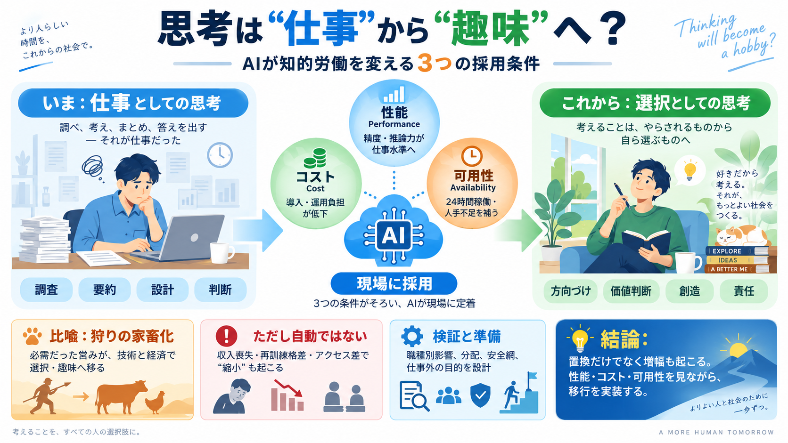

AI Adoption Statistics 2026: Businesses & Workers
What workers do with AI is mostly thinking work. In Microsoft’s analysis of about 105,000 North American commercial Copi…

Thinking will become a hobby
AIの急速な進歩は、文章・調査・推論・設計・判断といった知的労働を「仕事」から「余暇」へずらす可能性がある、という見通しです。
置換は“能力”だけで決まらない
議論が「AIは賢い／人間が上」という優劣論で止まると、実務で起きる置換の話が見えにくくなります。本文は「採用される理由」を中心に置きます。
必需→選択へ
狩りが家畜化で趣味化したように、技術と経済の必然が進むと「思考」は生活の手段から切り離され、余暇の営みになる、という比喩です（思考の趣味化）。
三要因で加速
知的労働の置換は、「(i)性能の向上、(ii)コスト低下と世代交代、(iii)24時間可用＋人手不足の緩和」という三要因で現場に入り込む、と整理されています。
改善の連鎖
初期のChatGPT段階から、数学分野などで大きな飛躍が見え、幻覚やバイアスの懸念だけでは置換の流れを止められない、という感覚が強調されます。
規制は“止める”か
過去の技術革新では雇用や権限の再配分が起き、規制や課税で潮流を抑える効果は限定的だった、という歴史観に賭けています。
役割の移動
仕事のための思考（調査・要約・設計案・意思決定支援）は効率化され、人間は方向づけ・価値判断・創造的な上流、そして責任へ寄っていく、という想定です。
“趣味になる”の条件
趣味化は「選択肢として可能になる」面がありますが、収入喪失・再訓練の格差・機会アクセスの差があると、思考は“強制的に細る”可能性もあります。
移行は“大変”
作者は楽観だけでなく、移行期はストレスと知的負荷が大きいと明示します。追随には柔軟性と回復力が必要だ、という結論につながります。
置換の検証ポイント
本文には、置換の規模・タイムライン・誰がどれだけ影響を受けるかなどの定量が不足しています。特に「スキル低下」の根拠や、教育・再訓練の有効性が確認されていません。
外部観測とのズレも
Web観測では、企業導入が広がる一方で、「仕事量が減るとは限らない（増えるカテゴリもある）」という報告もあります。置換だけでなく増幅（amplification）も起きうる点に注意が必要です。
受け止め方
結論として、AIは“知的労働の縮小”に向かいやすい一方、趣味化が自動で起きるとは限りません。職種・制度・格差・安全を含め、現実の分岐点を検証しつつ備えることが重要です。
What workers do with AI is mostly thinking work. In Microsoft’s analysis of about 105,000 North American commercial Copi…
Artificial Intelligence (AI) has emerged as a cornerstone of innovation, reshaping industries and altering the fabric of…
AI Adoption & Impact ## AI Amplifies Work, It Doesn’t Replace It The data is unambiguous: AI does not reduce workloads…
| Survey Dates | Sample Size | Margin of Error (95% confidence level) | Design Effect | --- --- | | WF Q1 2026, Feb. 4…
A privacy-preserving analysis of more than 100,000 chats in Microsoft 365 Copilot shows that 49% of all conversations su…